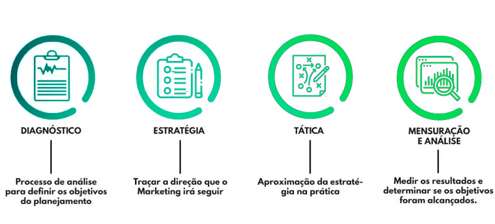

Etapas de nosso processo
Uma visão abrangente de como conduzimos o diagnóstico estratégico para sua empresa em 4 etapas.
Alguns Cases de Sucesso
Uma empresa, que chamaremos de "Empresa X", estava enfrentando desafios significativos no mercado. Sua marca, que já foi líder em seu setor, estava perdendo sua relevância e atração para os clientes. As vendas estavam estagnadas e a concorrência estava ganhando terreno. A alta administração da Empresa X sabia que era hora de agir. A empresa decidiu iniciar um processo de diagnóstico de marcas abrangente. Primeiramente, realizaram pesquisas detalhadas de mercado para entender a percepção atual dos clientes sobre a marca. Descobriram que a imagem da empresa estava desatualizada e não refletia seus valores e compromissos atuais. Em seguida, a Empresa X conduziu entrevistas internas para alinhar sua equipe com uma visão de marca comum. Isso ajudou a reforçar a cultura da empresa e garantir que todos estivessem na mesma página. Com base nos resultados da pesquisa e nas discussões internas, a empresa desenvolveu uma nova estratégia de marca. Ela incluiu uma revisão completa do logotipo, do slogan e da mensagem de marca. A Empresa X também lançou uma campanha de marketing inovadora para reintroduzir sua marca ao mercado.
//imagem